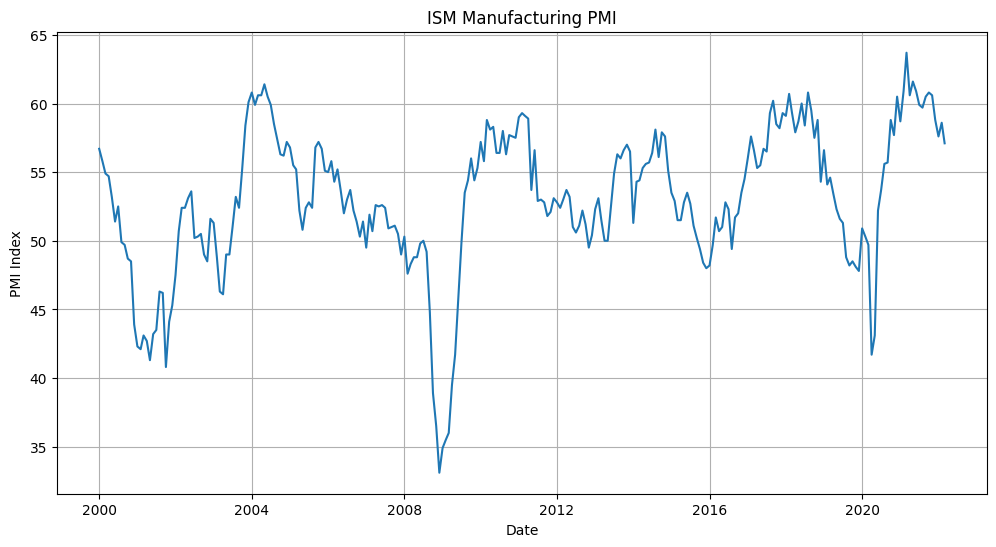

import pandas_datareader.data as web
import quandl
import datetime
import matplotlib.pyplot as plt
# 2000/1/1から現在まで
start = '2000-01-01'
end = datetime.date.today()
# PMIデータ取得
df_pmi = quandl.get("ISM/MAN_PMI",start_date=start, end_date=end)ISMデータ
https://note.com/scilabcafe/n/n3b81ab812775
# ボーダーライン 50のデータフレームを作成
df_y = df_pmi.copy()
df_y['PMI'] = 50# データのグラフ表示
plt.figure(figsize=(12, 6))
plt.plot(df_pmi.index, df_pmi['PMI'])
plt.xlabel('Date')
plt.ylabel('PMI Index')
plt.title('ISM Manufacturing PMI')
plt.grid(True)
plt.show()
# グラフィック系ライブラリ
import plotly.graph_objects as go # グラフ表示関連ライブラリ
import plotly.io as pio # 入出力関連ライブラリ
pio.renderers.default = 'iframe'
# グラフの実体trace オブジェクトを生成
scatter_trace_1 = go.Scatter(
x=df_pmi.index,
y=df_pmi['PMI'],
mode='lines',
line=dict(color='red', width=5),
)
# グラフの実体trace オブジェクトを生成。ボーダーライン50の描画のため
y_trace = go.Scatter(
x=df_y.index,
y=df_y['PMI'],
mode='lines',
line=dict(color='grey', width=2, dash='dash'),
)
# レイアウトオブジェクトを生成
graph_layout = go.Layout(
# 凡例は消去
showlegend=False,
# 幅と高さの設定
width=800, height=500,
# タイトルの設定
title=dict(
text='ISM Manufacturing PMI', # タイトル
font=dict(family='Times New Roman', size=20, color='grey'), # フォントの指定
xref='paper', # container or paper
x=0.5,
y=0.87,
xanchor='center',
),
# y軸の設定
yaxis=dict(
# y軸のタイトルの設定
title=dict(text='Index', font=dict(family='Times New Roman', size=20, color='grey')),
range=[30,70] # 軸の範囲の設定
),
# 凡例の設定
legend=dict(
xanchor='left',
yanchor='bottom',
x=0.02,
y=0.7,
orientation='v',
bgcolor='white',
bordercolor='grey',
borderwidth=1,
),
)
# 描画領域である figure オブジェクトの作成
fig = go.Figure(layout=graph_layout)
# add_trace()メソッドでグラフの実体を追加
fig.add_trace(scatter_trace_1)
fig.add_trace(y_trace)
# レイアウトの更新
fig.update_layout(
plot_bgcolor='white', # 背景色を白に設定
)
# 軸の設定
# linecolorを設定して、ラインをミラーリング（mirror=True）して枠にする
fig.update_xaxes(linecolor='black', linewidth=1, mirror=True)
fig.update_yaxes(linecolor='black', linewidth=1, mirror=True)
# ticks='inside'：目盛り内側, tickcolor：目盛りの色, tickwidth：目盛りの幅、ticklen：目盛りの長さ
fig.update_xaxes(ticks='inside', tickcolor='black', tickwidth=1, ticklen=5)
fig.update_yaxes(ticks='inside', tickcolor='black', tickwidth=1, ticklen=5)
# gridcolor：グリッドの色, gridwidth：グリッドの幅、griddash='dot'：破線
fig.update_xaxes(gridcolor='lightgrey', gridwidth=1, griddash='dot')
fig.update_yaxes(gridcolor='lightgrey', gridwidth=1, griddash='dot')
# tick0：初期軸目盛り, dtick：軸目盛り間隔
fig.update_xaxes(dtick='M12') # 12カ月ごと
fig.update_yaxes(tick0=0 , dtick=5)
# 軸の文字サイズ変更
fig.update_xaxes(tickfont=dict(size=15, color='grey'))
fig.update_yaxes(tickfont=dict(size=15, color='grey'))
# show()メソッドでグラフを描画
fig.show()# 2018/1/1から現在まで
start = '2010-01-01'
end = datetime.date.today()
# PMIデータ取得
df_pmi = quandl.get("ISM/MAN_PMI", start_date=start, end_date=end)
# 米国市場国債データ取得
df_rate_dgs = web.DataReader(['DGS10'], 'fred', start, end)
df_rate_dgs = df_rate_dgs.dropna() # 空データ削除import plotly.graph_objects as go # グラフ表示関連ライブラリ
import plotly.io as pio # 入出力関連ライブラリ
pio.renderers.default = 'iframe'
# subplot
from plotly.subplots import make_subplots
# グラフの実体trace オブジェクトを生成
pmi_trace = go.Scatter(
x=df_pmi.index,
y=df_pmi['PMI'],
mode='lines',
line=dict(color='red', width=5),
name='ISM Manufacturing PMI'
)
# グラフの実体となる trace オブジェクトを生成
rate_dgs_trace = go.Scatter(
x=df_rate_dgs.index,
y=df_rate_dgs['DGS10'],
mode='lines',
line={'color':'blue', 'width':4},
name='10-Year Treasury Constant Maturity Rate'
)
# 2つ目の軸を表示する設定
fig = make_subplots(specs=[[{"secondary_y": True}]])
# 描画領域である figure オブジェクトの作成
fig.add_trace(pmi_trace, secondary_y=False) # 第1軸に設定(secondary_y=False)
fig.add_trace(rate_dgs_trace, secondary_y=True) # 第2軸に設定(secondary_y=True)
# レイアウトの更新
fig.update_layout(
# 凡例は消去
showlegend=True,
# 幅と高さの設定
width=900,height=600,
# タイトルの設定
title=dict(
text='ISM製造業景況指数と米長期金利の関係', # タイトル
font=dict(family='Times New Roman', size=20, color='grey'), # フォントの指定
xref='paper', # container or paper
x=0.5,
y=0.87,
xanchor='center',
),
plot_bgcolor='white', # 背景色を白に設定
# 凡例の設定
legend=dict(
xanchor='right',
yanchor='bottom',
x=0.5,
y=0.85,
orientation='v',
bgcolor='white',
bordercolor='grey',
borderwidth=1,
),
),
# 軸の設定
fig.update_yaxes(title='Index', secondary_y=False)
fig.update_yaxes(title='Treasury Constant Maturity Rate', secondary_y=True)
# linecolorを設定して、ラインをミラーリング（mirror=True）して枠にする
fig.update_xaxes(linecolor='black', linewidth=1, mirror=True)
fig.update_yaxes(linecolor='black', linewidth=1, mirror=True)
fig.update_xaxes(linecolor='black', linewidth=1, mirror=True)
fig.update_yaxes(linecolor='black', linewidth=1, mirror=True)
# ticks='inside'：目盛り内側, tickcolor：目盛りの色, tickwidth：目盛りの幅、ticklen：目盛りの長さ
fig.update_xaxes(ticks='inside', tickcolor='black', tickwidth=1, ticklen=5)
fig.update_yaxes(ticks='inside', tickcolor='black', tickwidth=1, ticklen=5)
fig.update_xaxes(ticks='inside', tickcolor='black', tickwidth=1, ticklen=5)
fig.update_yaxes(ticks='inside', tickcolor='black', tickwidth=1, ticklen=5)
# gridcolor：グリッドの色, gridwidth：グリッドの幅、griddash='dot'：破線
fig.update_xaxes(gridcolor='lightgrey', gridwidth=1, griddash='dot')
fig.update_yaxes(gridcolor='lightgrey', gridwidth=1, griddash='dot')
fig.update_xaxes(gridcolor='lightgrey', gridwidth=1, griddash='dot')
fig.update_yaxes(gridcolor='lightgrey', gridwidth=1, griddash='dot')
# tick0：初期軸目盛り, dtick：軸目盛り間隔
fig.update_xaxes(dtick='M12') # 12カ月ごと
# 軸の文字サイズ変更
fig.update_xaxes(tickfont=dict(size=14, color='grey'))
fig.update_yaxes(tickfont=dict(size=18, color='grey'))
# show()メソッドでグラフを描画
fig.show()